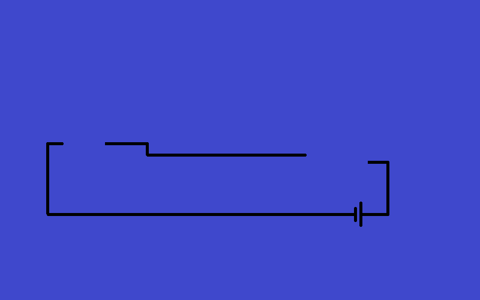
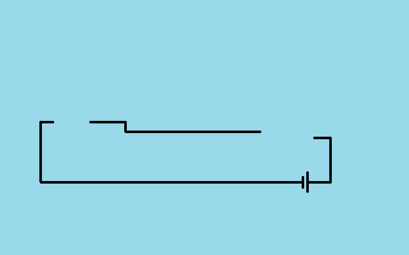
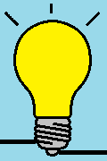
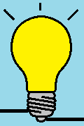

Ngjarje¶
Kur lexoni gjendje nuk është e mjaftueshme¶
Në fillim të seksionit për ndërveprimin përmendëm se ekzistojnë dy mënyra themelore që një program të marrë informacione rreth veprimeve të përdoruesit. Mënyra e parë është të lexojmë gjendjen e mouse dhe tastierës, dhe ne jemi njohur me atë mënyrë deri tani.
Leximi i gjendjeve të mouse dhe tastierës është i lehtë dhe i mjaftueshëm për shumë aplikime. Sidoqoftë, në disa situata nuk është mënyra më e përshtatshme për të bërë gjërat. Për shembull, nëse do të donim të dinim kur përdoruesi klikon mouse:
shpesh leximi i gjendjes së mouse mund të rezultojë në lexime të shumta radhazi që tregojnë se një buton i mouse është poshtë, por ne nuk e dimë nëse është i njëjti klikim ose ka pasur më shumë klikime.
leximi i rrallë i gjendjes së mouse mund të rezultojë në atë që përdoruesi shtyp dhe lëshon një buton pas një leximi dhe para tjetrës. Në këtë rast, programi nuk do të marrë informacione rreth këtij klikimi.
Let us look at the following example.

Shembull - ndërprerës i prishur:
Programi i mëposhtëm tërheq një imazh të një diagrami instalimesh për secilën kornizë, dhe pastaj mbi të imazhe të një ndërprerësi dhe një llambë. Ideja është që “të ndizni dhe fikni dritën” duke klikuar në çelës.
Gjatë zgjidhjes së detyrës duke lexuar gjendjen e mouse, sjellje të ndryshme të padëshiruara mund të vijnë për shkak të mangësive të përshkruara më lart, të tilla si mos reagimi ndaj një klikimi (leximi i gjendjes shumë rrallë) ose ndezja e dritës (leximi i gjendjes shumë shpesh). Edhe nëse shpejtësia juaj e klikimit është e saktë, ju mund të shmangni këto efekte të padëshiruara dhe të ndizni ose fikni dritën normalisht, pasi dikush që klikon më shpejt ose më ngadalë mund të ndjejë problemin.
Provoni programin duke klikuar në shpejtësi të ndryshme.
 {kind=link}
{kind=link}


 

{kind=link}
Informacion rreth ndryshimit të gjendjes¶
Siç e përmendëm në hyrje të këtij kapitulli, ne gjithashtu mund të ndjekim veprimet e përdoruesit në një mënyrë tjetër, që është përdorimi i ngjarjeve të sistemit. Ngjarjet me të cilat merremi këtu mund të kuptohen si ndryshime në gjendjen e mouse ose tastierës (megjithëse ka ngjarje të tjera, siç janë ato të krijuara nga ora e sistemit). Për shembull, kur një çelës në tastierë ose një buton të mouse zbret, sistemi operativ i kompjuterit merr një sinjal nga pajisja hyrëse dhe e regjistron atë si një ngjarje. E njëjta gjë ndodh në momentin e lëshimit të çelësave (butonave), ndryshimit të pozicionit të mouse, etj.
Të gjitha ngjarjet regjistrohen dhe mbahen mend, kështu që nuk mund të ndodhë që të humbasim veprimin e një përdoruesi, si kur lexojmë vetëm statusin.
Libraria e PyGame na lejon të marrim një objekt për secilën ngjarje me informacione rreth asaj ngjarje, të ekzaminojmë se çfarë lloj ngjarje është, dhe t’i përgjigjet me programim ngjarjes sipas nevojës.
Përdorimi i eventeve në programe¶
Në programet që përdorin ngjarje, ne do të shkruajmë një funksion të veçantë hand_event (event) (mund t’i jepni një emër tjetër). Ky funksion merr një ngjarje event PyGame si një argument, i cili përmban të gjitha informacionet e nevojshme për ngjarjen. Ne shtojmë emrin e funksionit tonë të përpunimit të ngjarjes si argumenti i tretë në thirrjen e funksionit pygamebg.frame_loop. Kjo mundëson që funksioni ynë të quhet hand_event për secilën ngjarje që ndodh ndërsa programi po funksionon.
Tani le të shohim se si e trajtojmë saktësisht ngjarjen.
Në funksionin hand_event, kontrollojmë nëse kjo ngjarje është e tipit “një buton i mouse që bie poshtë”. Ne e bëjmë këtë duke krahasuar llojin e ngjarjes, të ruajtur në fushën event.type, me konstanten PyGame pg.MOUSEBUTTONDOWN, e cila ka kuptimin e përshkruar.
Nëse ngjarja është e llojit që na intereson (zhvendosja e një butoni të mouse poshtë, d.m.th. fillimi i një klikimi), duke përdorur komandën mouse_point = event.pos vendosim koordinatat e pikës ku ishte mouse në kohën kur ngjarja ka ndodhur në ndryshoren mouse-point, sepse ne duam të dimë se çfarë klikoi përdoruesi.
Komandat e mëposhtme kontrollojnë nëse përdoruesi ka klikuar në ndërprerës, dhe nëse po, ndryshoni vlerën e ndryshores logjike switch_on, e cila tregon gjendjen e ndërprerës.
Shembull - switch:
Ky program bën të njëjtën gjë si ai i mëparshmi, por përdor ngjarjen e mouse poshtë, në mënyrë që të mos ketë efekte të padëshiruara.